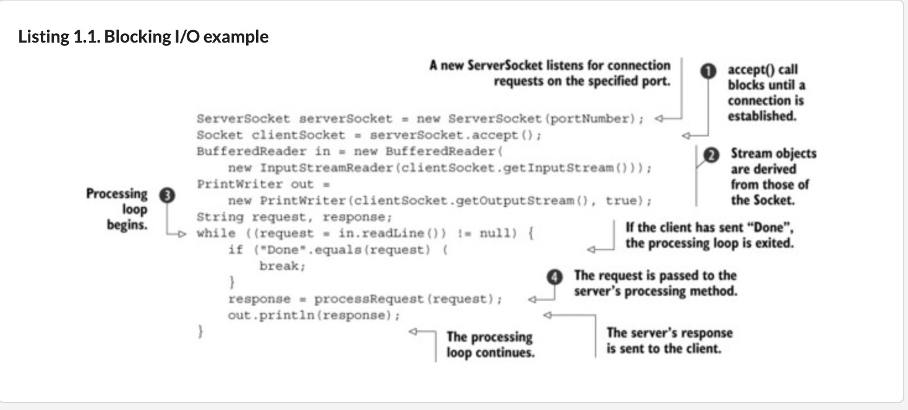
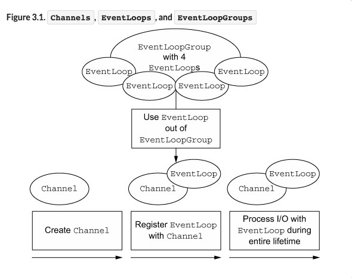
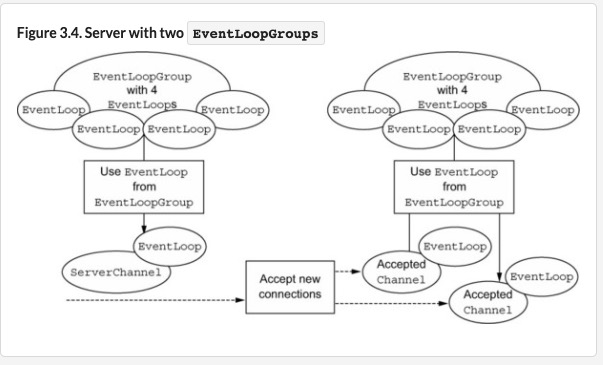
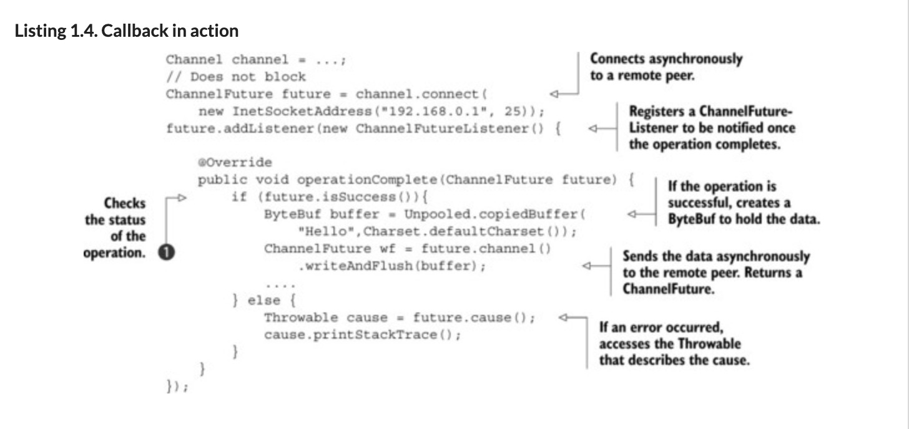
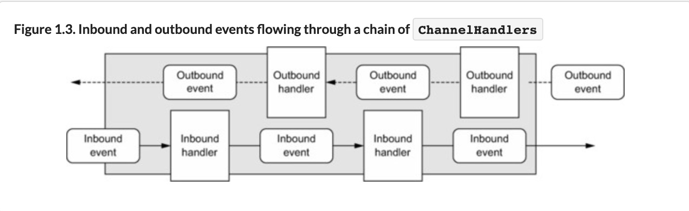
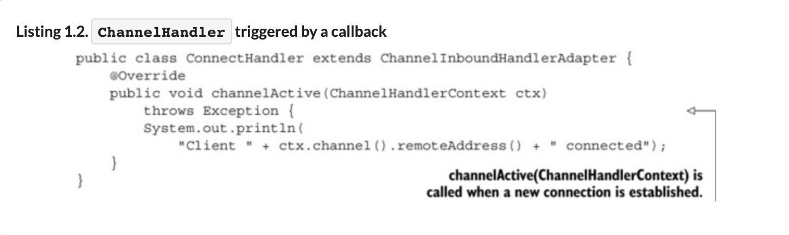
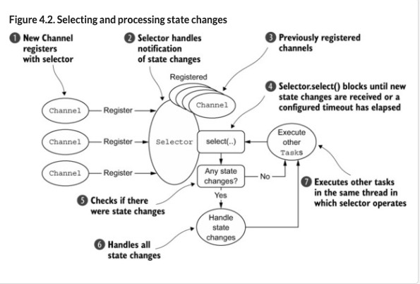
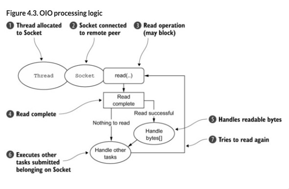
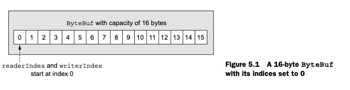

netty-in-action
Netty is an asynchronous event-driven network application framework for rapid development of maintainable high performance protocol servers & clients.

- accept() blocks until a connection is established on the ServerSocket , then returns a new Socket for communication between the client and the server. The ServerSocket then resumes listening for incoming connections.
- A BufferedReader and a PrintWriter are derived from the Socket’s input and output streams . The former reads text from a character input stream, the latter prints formatted representations of objects to a text output stream.
- readLine() blocks until a string terminated by a linefeed or carriage return is read in .
- The client’s request is processed
这种 old io 需要针对每个客户端线程单独创建一个 thread 来处理，会造成资源浪费，一是任何时候会有很多线程处于休眠状态，二是每个线程会被分配 64kb-1mb 的栈内存，浪费系统资源，三是创建线程多了，超过了系统负载，线程上下文切换开销大
NIO was originally an acronym for New Input/Output, but the Java API has been around long enough that it is no longer new. Most users now think of NIO as signifying non-blocking I/O, whereas blocking I/O is OIO or old input/output. You may also encounter references to plain I/O.
Today, as system users we take this capability for granted, and as developers we expect the bar to move even higher. We know there will always be demands for greater throughput and scalability—to be delivered at lower cost. 大的吞吐量和可伸缩性，以更低的成本交付
Hence, a fundamental concept of object orientation: hide the complexity of underlying implementations behind simpler abstractions. 因此，面向对象的基本概念是：将基础实现的复杂性隐藏在更简单的抽象后面。
Spring is probably the best known and is actually an entire ecosystem of application frameworks addressing object creation, batch processing, database programming, and so on.
In the networking domain, Netty is the preeminent framework for Java.[4] Harnessing the power of Java’s advanced APIs behind an easy-to-use API, Netty leaves you free to focus on what really interests you—the unique value of your application.
Better throughput and lower latency than core Java APIs. Reduced resource consumption thanks to pooling and reuse. Minimal memory copying.
handwritten dispatch code that would otherwise be required. Under the covers, an EventLoop is assigned to each Channel to handle all of the events, including
- Registration of interesting events
- Dispatching events to ChannelHandlers
- Scheduling further actions
The EventLoop itself is driven by only one thread that handles all of the I/O events for one Channel and does not change during the lifetime of the EventLoop. This simple and powerful design eliminates any concern you might have about synchronization in your ChannelHandlers, so you can focus on providing the right logic to be executed when there is interesting data to process. As we’ll see when we explore Netty’s threading model in detail, the API is simple and compact.
What is the connection between asynchrony and scalability?
- Non-blocking network calls free us from having to wait for the completion of an operation. Fully asynchronous I/O builds on this feature and carries it a step further: an asynchronous method returns immediately and notifies the user when it is complete, directly or at a later time.
- Selectors allow us to monitor many connections for events with many fewer threads.
netty 的核心组件，Netty’s primary building blocks:
- Channels
think of a Channel as a vehicle for incoming (inbound) and outgoing (outbound) data. As such, it can be open or closed, connected or disconnected.
- Callbacks
Netty uses callbacks internally when handling events; when a callback is triggered the event can be handled by an implementation of interface ChannelHandler
- Futures
jdk Future allow you only to check manually whether the operation has completed or to block until it does Netty provides its own implementation, ChannelFuture, for use when an asynchronous operation is executed.
- Events and handlers
Netty uses distinct events to notify us about changes of state or the status of operations.
Netty 组件和设计
From a high-level perspective, Netty addresses two corresponding areas of concern, which we might label broadly as technical and architectural. First, its asynchronous and event-driven implementation, built on Java NIO, guarantees maximum application performance and scalability under heavy load. Second, Netty embodies a set of design patterns that decouple application logic from the network layer, simplifying development while maximizing the testability, modularity, and reusability of code. 首先 netty 基于 java NIO 的异步和事件驱动的实现，保证了高负载下应用的最高性能和可伸缩性。其次，netty 使用了一系列的设计模式将应用程序的逻辑和网络层分离，最大程度的提高了代码的可测试性，模块化和可重用性。
Channel
Netty’s Channel interface provides an API that greatly reduces the complexity of working directly with Sockets. Additionally, Channel is the root of an extensive class hierarchy having many predefined, specialized implementations
EventLoop
The EventLoop defines Netty’s core abstraction for handling events that occur during the lifetime of a connection.
- An EventLoopGroup contains one or more EventLoops.
- An EventLoop is bound to a single Thread for its lifetime.
- All I/O events processed by an EventLoop are handled on its dedicated Thread.
- A Channel is registered for its lifetime with a single EventLoop.
- A single EventLoop may be assigned to one or more Channels.

As we’ve explained, all I/O operations in Netty are asynchronous. Because an operation may not return immediately, we need a way to determine its result at a later time. For this purpose, Netty provides ChannelFuture, whose addListener() method registers a ChannelFutureListener to be notified when an operation has completed(whether or not successfully).
As an example, ChannelInboundHandler is a subinterface you’ll implement frequently. This type receives inbound events and data to be handled by your application’s business logic. You can also flush data from a ChannelInboundHandler when you’re sending a response to a connected client. The business logic of your application will often reside in one or more ChannelInboundHandlers.
A ChannelPipeline provides a container for a chain of ChannelHandlers and defines an API for propagating the flow of inbound and outbound events along the chain. When a Channel is created, it is automatically assigned its own ChannelPipeline.
ChannelHandlers are installed in the ChannelPipeline as follows:
- A ChannelInitializer implementation is registered with a ServerBootstrap.
- When ChannelInitializer.initChannel() is called, the ChannelInitializer installs a custom set of ChannelHandlers in the pipeline.
- The ChannelInitializer removes itself from the ChannelPipeline.
There are two ways of sending messages in Netty. You can write directly to the Channel or write to a ChannelHandlerContext object associated with a ChannelHandler. The former approach causes the message to start from the tail of the ChannelPipeline, the latter causes the message to start from the next handler in the ChannelPipeline.
When a ChannelHandler is added to a ChannelPipeline, it’s assigned a ChannelHandlerContext, which represents the binding between a ChannelHandler and the ChannelPipeline. Although this object can be used to obtain the underlying Channel, it’s mostly utilized to write outbound data.
Netty’s bootstrap classes provide containers for the configuration of an application’s network layer, which involves either binding a process to a given port or connecting one process to another one running on a specified host at a specified port.

A server needs two distinct sets of Channels. The first set will contain a single ServerChannel representing the server’s own listening socket, bound to a local port. The second set will contain all of the Channels that have been created to handle incoming client connections—one for each connection the server has accepted. Figure 3.4 illustrates this model, and shows why two distinct EventLoopGroups are required.
  
Transports
Selection operation bit-set
- OP_ACCEPT Requests notification when a new connection is accepted, and a Channel is created.
- OP_CONNECT Requests notification when a connection is established.
- OP_READ Requests notification when data is ready to be read from the Channel.
- OP_WRITE Requests notification when it is possible to write more data to the Channel. This handles cases when the socket buffer is completely filled, which usually happens when data is transmitted more rapidly than the remote peer can handle.
Selecting and processing state changes

ZERO-COPY:
Zero-copy is a feature currently available only with NIO and Epoll transport. It allows you to quickly and efficiently move data from a file system to the network without copying from kernel space to user space, which can significantly improve performance in protocols such as FTP or HTTP. This feature is not supported by all OSes. Specifically it is not usable with file systems that implement data encryption or compression—only the raw content of a file can be transferred. Conversely, transferring files that have already been encrypted isn’t a problem.
Epoll—native non-blocking transport for Linux
epoll:
The growing importanceKof Linux as a platform for high-performance networking has led to the development of a number of advanced features, including epoll, a highly scalable I/O event-notification feature. This API, available since version 2.5.44 (2002) of the Linux kernel, provides better performance than the older POSIX select and poll system calls[2] and is now the de facto standard for non-blocking networking on Linux. The Linux JDK NIO API uses these epoll calls.
Netty provides an NIO API for Linux that uses epoll in a way that’s more consistent with its own design and less costly in the way it uses interrupts.[3] Consider utilizing this version if your applications are intended for Linux; you’ll find that performance under heavy load is superior to that of the JDK’s NIO implementation.

Given this, you may wonder how Netty can support NIO with the same API used for asynchronous transports. The answer is that Netty makes use of the SO_TIMEOUT Socket flag, which specifies the maximum number of milliseconds to wait for an I/O operation to complete. If the operation fails to complete within the specified interval, a SocketTimeoutException is thrown. Netty catches this exception and continues the processing loop. On the next EventLoop run, it will try again. This is the only way an asynchronous framework like Netty can support OIO.[5] Figure 4.3 illustrates this logic.
ByteBuf
Netty’s alternative to ByteBuffer is ByteBuf, a powerful implementation that addresses the limitations of the JDK API and provides a better API for network application developers. ByteBuf 的特性：
■ It’s extensible to user-defined buffer types. ■ Transparent zero-copy is achieved by a built-in composite buffer type. ■ Capacity is expanded on demand (as with the JDK StringBuilder). ■ Switching between reader and writer modes doesn’t require calling ByteBuffer’s flip() method. ■ Reading and writing employ distinct indices. ■ Method chaining is supported. ■ Reference counting is supported. ■ Pooling is supported.
ByteBuf 维护两个索引，读索引和写索引

Heap Buffers
stores the data in the heap space of the JVM 堆 buffer 可以直接使用
ByteBuf heapBuf = ...;
if (heapBuf.hasArray()) {
byte[] array = heapBuf.array();
int offset = heapBuf.arrayOffset() + heapBuf.readerIndex();
int length = heapBuf.readableBytes();
handleArray(array, offset, length);
}
Direct Buffers
Direct buffer is another ByteBuf pattern. 可以使用堆外内存。目的是避免每次 I/O 操作之前将缓冲区的内容复制到中间缓冲区。 This aims to avoid copying the buffer’s contents to (or from) an intermediate buffer before (or after) each invocation of a native I/O operation. 堆外 buffer 使用需要先复制到堆内
ByteBuf directBuf = ...;
if (!directBuf.hasArray()) {
int length = directBuf.readableBytes();
byte[] array = new byte[length];
directBuf.getBytes(directBuf.readerIndex(), array);
handleArray(array, 0, length);
}
执行网络 IO 或者文件 IO 为啥要通过堆外内存？ DirectByteBuffer 通过 malloc 创建的是 C Heap 的 buffer，为什么采用 C Heap 的 buffer 与 kernel 交互？
如果是使用 DirectBuffer 就会少一次内存拷贝。如果是非 DirectBuffer，JDK会先创建一个DirectBuffer，再去执行真正的写操作。这是因为，当我们把一个地址通过JNI传递给底层的C库的时候，有一个基本的要求，就是这个地址上的内容不能失效。然而，在GC管理下的对象是会在Java堆中移动的。也就是说，有可能我把一个地址传给底层的 write，但是这段内存却因为 GC 整理内存而失效了。所以我必须要把待发送的数据放到一个 GC 管不着的地方。这就是调用native 方法之前，数据一定要在堆外内存的原因。
但是堆外的 buffer 我们是没法直接进行操作的，操作之前一般先复制到中间缓冲区。
Composite Buffers
读书笔记
java 在 04 年 1.4 版本开始支持 no-blocking I/O，在 java.nio 包。
为什么不使用 Netty 而不直接使用 nio？
Although many applications have been built using the Java NIO API directly, doing so correctly and safely is far from trivial. In particular, processing and dispatching I/O reliably and efficiently under heavy load is a cumbersome and error-prone task best left to a high-performance networking expert—Netty
| Category | Netty features |
|---|---|
| Design | Unified API for multiple transport types, both blocking and non-blocking. Simple but powerful threading model. True connectionless datagram socket support. Chaining of logic components to support reuse. |
| Ease of use | Extensive Javadoc and large example set. No required dependencies beyond JDK 1.6+. (Some optional features may require Java 1.7+ and/or additional dependencies.) |
| Performance | Better throughput and lower latency than core Java APIs. Reduced resource consumption thanks to pooling and reuse. Minimal memory copying. |
| Robustness | No OutOfMemoryError due to slow, fast, or overloaded connection. Eliminates unfair read/write ratio typical of NIO applications in high-speed networks. |
| Security | Complete SSL/TLS and StartTLS support. Usable in restricted environments such as Applet or OSGI. |
| Community-driven | Release early and often. |
异步和事件驱动
- Non-blocking network calls free us from having to wait for the completion of an operation. Fully asynchronous I/O builds on this feature and carries it a step further: an asynchronous method returns immediately and notifies the user when it is complete, directly or at a later time.
- Selectors allow us to monitor many connections for events with many fewer threads.
netty 的核心组件